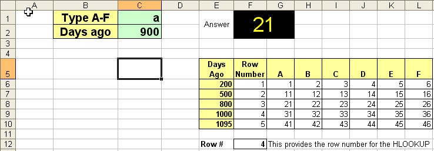
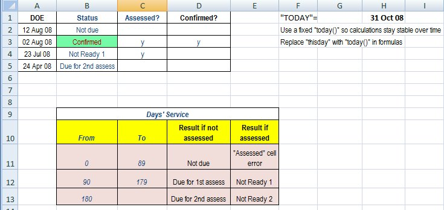
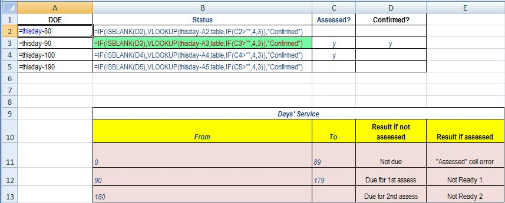
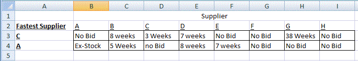
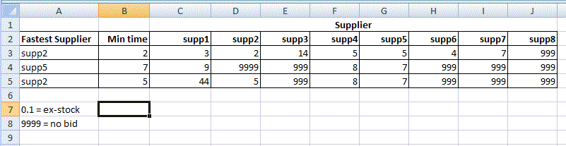

CHALLENGE 1
A worthy challenge from yangontha on 28 October 2006. If memory serves me correctly, yangontha said: Column A has a property type and the value ranges from 1 to 5. Column B and C has some decimal values. In each row, depending on the value of type, the different formula is used to calculate for column D. For example, if the type is 1, then the values in column B and C for that row are added and put in column D. If the type is 2, then the values in column B and C for that row are multiplied and put in column D. Depending on the value of type, there is a different formula. The problem is how to put the formula in column D so that the respective formulae is used to calculate for column D
| 2 |
4 |
6 |
24 |
multiply |
| 1 |
8 |
28 |
36 |
add |
| 1 |
9 |
7 |
16 |
add |
| 2 |
9 |
7 |
63 |
multiply |
I am not saying, nested if is necessary. But I can’t think of a way, how to put the formula in column D.
This is what I replied to yangontha. Hi Yangontha.
Not even a nested IF is required using the sample data you provided. There are only 2 operators to cope with (multiply and add) so a simple IF does the trick.
| |
A |
B |
C |
D |
| 1 |
2 |
4 |
6 |
=IF(A1=1 , B1+C1 , B1*C1) |
| 2 |
1 |
8 |
28 |
=IF(A2=1 , B2+C2 , B2*C2) |
| 3 |
1 |
9 |
7 |
=IF(A3=1 , B3+C3 , B3*C3) |
| 4 |
2 |
9 |
7 |
=IF(A4=1 , B4+C4 , B4*C4) |
Mind you, if you added divide and subtract to get four conditions rather than two, a different approach would be needed – but not VLOOKUP in this case – you’d use the CHOOSE function (as mentioned above).
| |
A |
B |
C |
D |
E |
| 7 |
Function |
X |
Y |
Answer |
Functions |
| 8 |
1 |
4 |
6 |
=CHOOSE(A8 , B8+C8 , B8*C8 , B8/C8 , B8-C8) |
1 = + |
| 9 |
2 |
8 |
28 |
=CHOOSE(A9 , B9+C9 , B9*C9 , B9/C9 , B9-C9) |
2 = * |
| 10 |
3 |
9 |
7 |
=CHOOSE(A10 , B10+C10 , B10*C10 , B10/C10 , B10-C10) |
3 = / |
| 11 |
4 |
5 |
2 |
=CHOOSE(A11 , B11+C11 , B11*C11 , B11/C11 , B11-C11) |
4 = – |
It’s not VLOOKUP, perhaps , but I never said VLOOKUP was the answer for everything.
You always use the best-fitting solution to a problem: you don’t force the one tool you know into solving every problem. Good try , but nested IF is still a beaten foe. 🙂
|
CHALLENGE 5
11 October 2007 Sara wrote to say…
Hi Mark:
I’m quite intrigued on your battle against the nested ifs!
Here’s another challenge…you haven’t addressed if the condition meets 2 requirements such as:
=IF(AND(M11=”A”,J11>(TODAY()-1095)>0),”No”,”Yes”) =IF(AND(M11=”B”,J11>(TODAY()-1000)>0),”No”,”Yes”) =IF(AND(M11=”C”,J11>(TODAY()-800)>0),”No”,”Yes”) =IF(AND(M11=”D”,J11>(TODAY()-500)>0),”No”,”Yes”) =IF(AND(M11=”E”,J11>(TODAY()-200)>0),”No”,”Yes”) and so on…I’m driving myself crazy with the ifs….could you help? Your solutions and answers to challenges are greatly appreciated!!!
Take care, Sara
This was an interesting challenge, but solvable with a bit of lateral thinking and a nested LOOKUP.  Entering an arbitrary “type” (A-F in this case) into C2 and a “days ago” into C2 gives the value matching that combination of days and type. The trick is to use a VLOOKUP with a HLOOKUP (its less famous cousin) inside it. The formula in F12 is =VLOOKUP(C2,E6:F10,2) + 1 This handles the first step of the two-part lookup – it looks up the “days ago” value in the table and returns a row number (that’s the tricky bit). Then, the formula for the answer is =HLOOKUP(C1,G5:L10,F12) This looks up the “type” in a HLOOKUP and uses the previous VLOOKUP’s value to act as the HLOOKUP’s row parameter.
Download the solution here.
|
CHALLENGE 7
Loti wrote in 2008… I am an HR Officer responsible for recruiting employees for a Mining company that has a workforce of 1800 employees. I maintain an employee data base in excel. I want to create a column in the database, where I will be able to know if an employee is due for the first probation assessment after 3 months. If, after being assessed, the employee is not ready for confirmation I would like to indicate in the next column that “Emp. is Not Ready” and after another 3 months the employee should be subjected to a 2nd assessment. If after the first assessment, the employee is deemed suitable for the position, I should indicated ‘Confirmed” in the next column to close the chapter on that particular employee. What functions can I use to know (1) when an employee is due for the first assessment, (2) if employee is not subjected to the first assessment after 3 months that the 1st assessment is overdue, and (3) when the 2nd assessment is due. I have attached part of the database for you to fully understand my problem. Regards Loti The sample spreadsheet attached had some quite lengthy nested IF statements such as…
=IF((DATEDIF(C4,TODAY(),”d”))>80,IF(((DATEDIF(C4,TODAY(),”d”)))<91,”Due”,IF(((DATEDIF(C4,TODAY(),”d”)))<180,IF(ISBLANK(E4),”Over due”,””),””)))
It took a bit of fiddling and head scratching to work out the logic of the problem. It was interesting because there were several logical tests to consider: How long has the person been employed? Have they been confirmed yet? Have they been assessed yet?
Again, I thought, VLOOKUP and his magical pony can save the day. With a relatively simple IF, a VLOOKUP and a super-sneaky IF inside the VLOOKUP we can test for multiple conditions in one sweet package…

Column A is Date of Employment. Note that in this test data I fixed “today” to a particular date so the result would not vary over time. One would use the TODAY( ) function for the real thing.
The important column is B – status. If they have not been employed for 90 days, they are not due for assessment. If they have been employed 90 to 179 days, and they have not been assessed, their status is “due for first assessment”. If they had been assessed but not confirmed, they would be shown as “Not ready 1”.
You can see how complex this is getting. Nested IF was simply not up to the task. This is how I did it…
 Ignore the fact that DOE entries are manufactured rather than being literal dates. I did this to easily create test data for each possible DOE. Look at column B. If the person has NOT already been confirmed… “A VLOOKUP begins, looking up the person’s length of service.
Once it finds the right row in the table, it needs to choose either column 3 (if they have been assessed) or column 4 (if they have not been assessed). The respective cells contain appropriate status information.
The choice of column is made in the VLOOKUP formula by the IF statement checking to see if an assessment has been made.”
If the person HAS been confirmed, it’s a simple status of “confirmed”.
So I hope you can see how once again VLOOKUP can be made to respond to second-level decisions by using different columns for the function’s return value. It’s similar to a couple of the challenges above.
Thanks for the challenge, Loti!
Download the Excel solution (Excel 2007 format)
|
Challenge 8
I think you’ll like this one. Chris of a company in the U.K. wrote to say:
Hi,
How would you suggest I set up the attached spreadsheet to avoid so many nested "IF"s"
Best Regards,
Chris

Are you spotting any early problems yet? I’m sure you are. Now for the fun bit – look at the formula in A3…
=(IFERROR(INDEX($B$2:$G$2,1,(MATCH(“Ex-Stock”,B4:G4,0))), (IFERROR(INDEX($B$2:$G$2,1,(MATCH(“1 Week”,B4:G4,0))), (IFERROR(INDEX($B$2:$G$2,1,(MATCH(“2 Weeks”,B4:G4,0))), (IFERROR(INDEX($B$2:$G$2,1,(MATCH(“3 Weeks”,B4:G4,0))), (IFERROR(INDEX($B$2:$G$2,1,(MATCH(“4 Weeks”,B4:G4,0))), (IFERROR(INDEX($B$2:$G$2,1,(MATCH(“5 Weeks”,B4:G4,0))), (IFERROR(INDEX($B$2:$G$2,1,(MATCH(“6 Weeks”,B4:G4,0))), (IFERROR(INDEX($B$2:$G$2,1,(MATCH(“7 Weeks”,B4:G4,0))), (IFERROR(INDEX($B$2:$G$2,1,(MATCH(“8 Weeks”,B4:G4,0))), (IFERROR(INDEX($B$2:$G$2,1,(MATCH(“9 Weeks”,B4:G4,0))), (IFERROR(INDEX($B$2:$G$2,1,(MATCH(“10 Weeks”,B4:G4,0))), (IFERROR(INDEX($B$2:$G$2,1,(MATCH(“11 Weeks”,B4:G4,0))), (IFERROR(INDEX($B$2:$G$2,1,(MATCH(“12 Weeks”,B4:G4,0))), (IFERROR(INDEX($B$2:$G$2,1,(MATCH(“13 Weeks”,B4:G4,0))), (IFERROR(INDEX($B$2:$G$2,1,(MATCH(“14 Weeks”,B4:G4,0))), (IFERROR(INDEX($B$2:$G$2,1,(MATCH(“15 Weeks”,B4:G4,0))), (IFERROR(INDEX($B$2:$G$2,1,(MATCH(“16 Weeks”,B4:G4,0))), (IFERROR(INDEX($B$2:$G$2,1,(MATCH(“38 Weeks”,B4:G4,0))),A3) )))))))))))))))))))))))))))))))))))
WOW!
And it would have continued unto the crack of doom if he had included all the weeks between 17 and 37 – and thereon! Take a few minutes to try solving it yourself before reading on… As I replied to Chris:
Wow, that was one really strangled formula you had there.
First problem was that you were mixing numbers and text in cells, which prevents Excel doing numeric comparisons.
Secondly, using text like "ex-stock" or "no bid" means nothing numerically to Excel.
So, by replacing "ex-stock" with a really low number (0) and "no-bid" to an impossibly high number (999) you can find the lowest value with a simple MIN.
Then use MATCH to find the corresponding column number containing that minimum value.
Then use index to find the matching value in the list of supplier names.
Hope that helps
Cheers
Mark
The result, spookily enough, was very similar to a tongue-in-cheek solution I gave for a dodgy ITA exam question in my 2008 Postmortem Question 12. This is how it looked after my facelift:

The revised formula for A3 is far more easily chewable – and it can handle any number of suppliers with no extra code! =INDEX(suppliers,1,MATCH(B3,C3:J3,0)) Note that C2:J2 is named ‘suppliers’ (I love named ranges) and B3 just contains MIN(C3:J3). Originally I had the MIN embedded in the A3 formula like this:
=INDEX(suppliers,1,MATCH(MIN(C3:J3),C3:J3,0))
which worked just as well, but I thought it was getting a bit long, and I also thought it would be informative to have the value visible in column B. It just shows that you can hide subsidiary calculations inside bigger formulas, or have them separate. I usually prefer starting with smaller step-by-step calculations. When it’s all working, I can collapse the individual steps into one big formula. Walk-through: The MIN function finds the smallest value in the range. The MATCH function finds which column in C3:J3 contains that value.
Finally the INDEX formula looks in the corresponding column in row 1 to get the supplier’s name. See the fixed Challenge 8 spreadsheet (XLS format)
|
{kind=link}